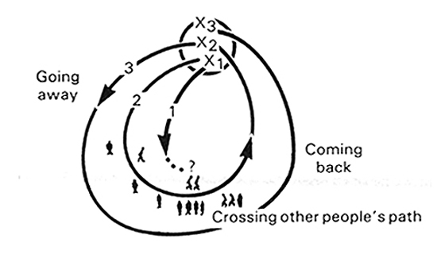

Indigenous Cartography and
Cartography of the Indigenous
Dr. Timothy Norris | tnorris@miami.edu
Guaman Poma, Phelipe (1615)
Nueva coronica y buen gobierno
. Retrieved from
http://www.kb.dk/permalink/2006/poma/titlepage/es/text/?open=id3083608
.
Immutable Mobiles and the Cycles of Accumulation

Latour, Bruno. (1987).
Science in Action: How to Follow Scientists and Engineers Through Society
. Cambridge MA: Harvard University Press.